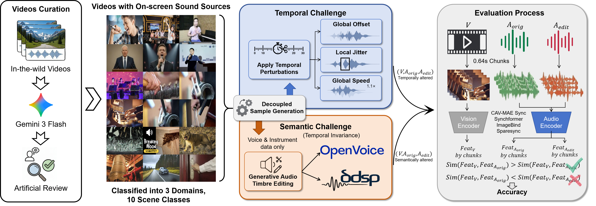

Audio–visual feature extraction is a fundamental component of multimodal understanding and generation tasks. However, existing evaluation protocols for feature extraction models exhibit dimensional bias, typically focusing on either semantic matching or temporal offset detection. Moreover, their data construction remains coupled, preventing independent assessment of temporal and semantic consistency. We propose AV-SyncBench, the first benchmark to fully separate temporal and semantic evaluation for audio–visual synchronization. Built from in-the-wild videos, it spans Voice, Music, and Sound across 10 scenarios and 5 challenge tasks. Data are automatically filtered and manually verified to ensure on-screen sound sources. The benchmark contains 3,269 videos and 38,390 samples, and we evaluate five representative models to quantify feature quality for alignment and downstream tasks.
